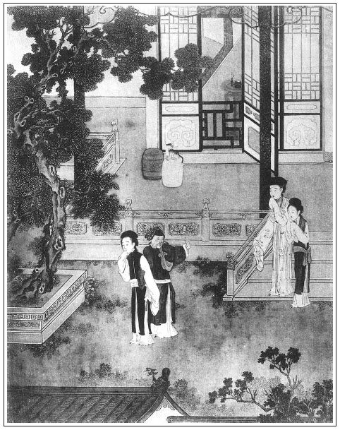

張回：西門慶倒，而金蓮曰「虧其扶住」；殷天錫辱，而月娘云「虧其正經」。乃作者特寫一樣筆墨，以丑月娘也。有一笑談云：一人夏月戴氈笠走而熱極，乃取其笠以作扇，而向人曰：「不是戴了他來，豈不熱死？」與此兩回文字，一樣成趣。
敬濟托薛嫂稍信，明言敗荷於雪中，而回想蓮開之意，寫出消敗光景也。
夫寫春梅，原為炎涼翻案，故用特寫其不垂別淚，以為雪中人放聲一哭也。一部炎涼大書，而有一不垂別淚之人，宜乎為炎涼之翻案者也。故後文極力寫其盈滿，總為作者有此不肯垂下之淚鬱結胸中故耳。曰玉樓亦不受炎涼所拘之人也，奈何獨寫春梅？不知玉樓之身份又高春梅一層。不在金、瓶、梅三人內算帳，是作者自以安命待時、守禮遠害一等局面自喻，蓋熱亦不能動他，冷亦不能逼他也。然則何以含酸？此又玉樓睹瓶兒死，人分其財而作，自有韶華速迅之感，生不逢時之歎。言我若死矣，亦與瓶兒一樣。是其知機處，是其行破處。故雲因抱恙，非有所爭如金蓮之琵琶，亦非若月娘之滿肚經卷，全變作一腔貪癡勢利。故春梅不垂別淚，玉樓辭靈不哭。一樣出門，止覺春梅是一腔憤懣，玉樓是深淺自知。故玉樓結至李衙內，以一死知之而即住，而春梅必結如許狼藉不堪。是又作者示人，見得人固不可炎涼我，我亦不可十分於得意時大揚眉吐氣也。故舊家池館之遊，春梅形愈下而心愈悲矣。宜乎有敬濟、周義諸人之紛紛不已也。
詞曰：
情若連環總不解，無端招引旁人怪。張夾真有此情。好事多磨成又敗，應難捱，相冷眼誰揪采？張夾過來人語。
鎮日愁眉和斂黛，闌干倚遍無聊賴。但願五湖明月在，權寧耐，終須還了鴛鴦債。張夾春梅也。
──右調

話說月娘取路來家，不題。單表金蓮在家，和陳敬濟兩個就如雞兒趕蛋相似，張夾妙喻。纏做一處。一日，金蓮眉黛低垂，腰肢寬大，終日懨懨思睡，茶飯懶咽，張夾偏有此等事。教敬濟到房中說：「奴有件事告你說，這兩日眼皮兒懶待開，腰肢兒漸漸大，肚腹中撲撲跳，茶飯兒怕待吃，身子好生沉困。有你爹在時，我求薛姑子符藥衣胞那等安胎，白沒見個蹤影。今日他沒了，和你相交多少時兒，便有了孩子。繡眉世上偏有此顛倒事，真是造化弄人，作者並與造化游矣。張夾作者弄筆，直與造化爭功。我從三月內洗身上，今方六個月，已有半肚身孕。往常時我排磕人，今日卻輪到我頭上。你休推睡裡夢裡，趁你大娘未來家，那裡討貼墮胎的藥，趁早打落了這胎氣。不然，弄出個怪物來，我就尋了無常罷了，再休想抬頭見人。」敬濟聽了，便道：「咱家鋪中諸樣藥都有，倒不知那幾樣兒墮胎，又沒方修治。張夾點明為武大砒石一映。你放心，不打緊處，大街坊胡太醫，他大小方脈，婦人科，都善治，常在咱家看病。等我問他那裡贖取兩貼，與你下胎便了。」婦人道：「好哥哥，你上緊快去，救奴之命。」
這陳敬濟包了三錢銀子，逕到胡太醫家來。胡太醫正在家，出來相見聲喏，認的敬濟是西門大官人女婿，讓坐說：「一向稀面，動問到捨有何見教？」敬濟道：「別無干瀆。」向袖中取出白金三星：「充藥資之禮，敢求下胎良劑一二貼，足見盛情。」胡太醫道：「天地之間，以好生為德。人家十個九個只要安胎的藥，你如何倒要打胎？沒有，沒有。」敬濟見他掣肘，又添了二錢藥資，說：「你休管他，各人家自有用處。此婦子女生落不順，情願下胎。」這胡太醫接了銀子，說道：「不打緊，我與你一服紅花一掃光。吃下去，如人行五里，其胎自落矣。」於是取了兩貼，付與敬濟。敬濟得了藥，作辭胡太醫，到家遞與婦人。婦人到晚夕，煎湯吃下去，登時滿肚裡生疼，睡在炕上，教春梅按在肚上張旁可是象膽乎？盡情揉揣。張夾瓶兒、官哥想應含笑九泉，報應固一絲不爽。可霎作怪，須臾坐淨桶，把孩子打下來了。只說身上來，令秋菊攪草紙倒在毛司裡。次日，掏坑的漢子挑出去，一個白胖的孩子兒。常言好事不出門，惡事傳千里，不消幾日，家中大小都知金蓮養女婿，偷出私孩子來了。
且說吳月娘有日來家。往回去了半個月光景，來時正值十月天氣。家中大小接著，如天上落下來的一般。繡旁寫出燒香之險。月娘到家中，先到天地佛像前燒了香，然後到西門慶靈前拜罷，就對玉樓眾姐妹，把岱岳廟中的事，從頭告訴一遍，因大哭一場。繡眉月娘，寡婦耳。家中安坐，猶恐生事，況遠出乎？曰大哭，自不好，深咎其自取也。張夾亦有何辭？自知羞矣。閤家大小都來參見了。月娘見奶子抱孝哥兒到跟前，子母相會在一處。張夾即此一句，月娘燒香之罪，可勝言哉？燒紙，置酒管待吳大舅回家。晚夕，眾姊妹與月娘接風，俱不在話下。
到第二日，月娘因路上風霜跋涉，著了辛苦，又吃了驚怕，身上疼痛沉困，整不好了兩三日。張夾燒香者看樣。那秋菊在家，把金蓮、敬濟兩人幹的勾當，聽的滿耳滿心，要告月娘說。走到上房門首，又被小玉噦罵在臉上，大耳刮子打在他臉上，罵道：「賊說舌的奴才，趁早與我走！俺奶奶遠路來家，身子不快活，還未起來。氣了他，倒值了多的。」罵的秋菊忍氣吞聲，喏喏而退。張夾一頓，亦是文字伏而後起之法。
一日，也是合當有事，敬濟進來尋衣服，婦人和他又在玩花樓上兩個做得好。被秋菊走到後邊，叫了月娘來看，說道：「奴婢兩番三次告大娘說不信。娘不在，兩個在家明睡到夜，夜睡到明，偷出私孩子來。與春梅兩個都打成一家。今日兩人又在樓上干歹事，不是奴婢說謊，娘快些瞧去。」月娘急忙走到前邊，兩個正幹的好，還未下樓。春梅在房中，忽然看見，連忙上樓去說：「不好了，大娘來了。」兩人忙了手腳，沒處躲避。敬濟只得拿衣服下樓往外走，被月娘撞見喝罵了幾句，說：「小孩兒家沒記性，有要沒緊進來撞甚麼？」敬濟道：「鋪子內人等著，沒人尋衣服。」月娘道：「我那等分付你，教小廝進來取，如何又進來寡婦房裡做甚麼？沒廉恥！」幾句罵得敬濟往外金命水命，走投無命。婦人羞的半日不敢下來。繡眉金蓮雖潑皮，到此亦潑皮不得，可見羞惡之心，人皆有之。然後下來，張夾四字寫得千金之難。被月娘盡力數說了一頓，說道：「六姐，今後再休這般沒廉恥！你我如今是寡婦，比不得有漢子，香噴噴在家裡。張夾月娘疏失之罪，正以此一句。瓶兒罐兒有耳朵，有要沒緊和這小廝纏甚麼！教奴才們背地排說的磣死了！常言道，男兒沒性，寸鐵無鋼；女人無性，爛如麻糖。其身正，不令而行；其身不正，雖令不行。你若長俊正條，肯教奴才排說？他在我跟前說了幾遍，我不信；今日親眼看見，說不的了。張夾大為秋菊吐氣。我今日說過，你要自家立志，替漢子爭氣。像我進香去，被強人逼勒，若是不正氣的，也來不到家了。」繡眉燒香一場，正博得好說嘴。張夾正是自言如此，才可問罪。金蓮吃月娘數說，羞的臉上紅一塊白一塊，張夾此處又當云「紅蓮花對白蓮花」矣。口裡說一千個沒有，只說：「我在樓上燒香，陳姐夫自去那邊尋衣裳，張夾西門自失計如此。誰和他說甚話來！」繡眉只一說字，賴得妙。當日月娘亂了一回，歸後邊去了。張夾月娘既無防患之先機，又無處事之急智，亂了一回，便爾如此。
晚夕，西門大姐在房內又罵敬濟：「賊囚根子，敢說又沒真贓實犯拿住你？張夾將前事一提，便使月娘不在家，金蓮敬濟諸事，大姐亦有風影，特未真贓實犯耳，否則大姐豈不真木偶哉！你還那等嘴巴巴的！今日兩個又在樓上做甚麼？說不的了！兩個弄的好磣兒，只把我合在缸底下一般。那淫婦要了我漢子，還在我面前拿話兒拴縛人，『毛司裡磚兒──又臭又硬』，繡旁定評。張夾又補月娘燒香，金蓮在家驕橫，大姐處處刺眼處。恰似降伏著那個一般。他便『羊角蔥靠南牆──老辣已定』。你還要在這裡雌飯吃！」敬濟罵道：「淫婦，你家收著我銀子，我雌你家飯吃？」使性子往前邊來了。繡眉情理窮極，無處躲閃，勢不得不變矣。
自此已後，敬濟只在前邊，無事不敢進入後邊來。取東取西，只是玳安、平安兩個往樓上取去。張夾取東取西，西門設法既如彼，月娘此日不為之移出外廂，依違糊塗又如此，不壞事安往？每日飯食，晌午還不拿出來，把傅夥計餓的只拿錢街上燙面吃。繡旁冷得不情。張夾如斯便了乎？正是龍斗虎傷，苦了小獐。各處門戶，日頭半天就關了。繡旁嚴得可笑。由是與金蓮兩個恩情又間阻了。繡眉當日以至親令敬濟得以出入閨榻者，月娘也。今日釀成淫亂卻棄出在外，並飲食不顧，殊無節次，安得不變恩而為仇也。張夾又一間。敬濟那邊陳宅的房子，一向教他母舅張團練看守居住。張團練革任在家閒住，敬濟早晚往那裡吃飯去，月娘也不追問。
兩個隔別，約一月不得會面。婦人獨在那邊，挨一日似三秋，過一宵如半夏，怎禁這空房寂靜，慾火如蒸，要見他一面，難上之難。兩下音信不通，這敬濟無門可入。忽一日見薛嫂兒打門首過，有心要托他寄一紙柬兒與金蓮，訴其間阻之事，表此肺腑之情。一日，推門外討帳，騎頭口徑到薛嫂家，拴了驢兒，掀簾便問：「薛媽在家？」有他兒子薛紀媳婦兒金大姐抱孩子在炕上，伴著人家賣的兩個使女，聽見有人叫薛媽，出來問：「是誰？」敬濟道：「是我。」問：「薛媽在家不在？」金大姐道：「姑夫請家來坐，俺媽往人家兌了頭面，討銀子去了。有甚話說，使人叫去。」連忙點茶與敬濟吃。坐不多時，只見薛嫂兒來了，與敬濟道了萬福，說：「姑夫那陣風兒吹來我家！」叫金大姐：「倒茶與姑夫吃。」金大姐道：「剛才吃了茶了。」敬濟道：「無事不來。如此這般，與我五娘勾搭日久，今被秋菊丫頭戳舌，把俺兩個姻緣拆散。大娘與大姐甚是疏淡我。張夾大姐取死以此。我與六姐拆散不開，二人離別日久，音信不通，欲稍寄數字進去與他。無人得到內裡，須央及你，如此這般通個消息。」向袖中取出一兩銀子來：「這些微禮，權與薛媽買茶吃。」那薛嫂一聞其言，拍手打掌笑起來，說道：「誰家女婿戲丈母？張夾敬濟說得與金蓮勾搭，何等得親密！入旁人口中便名分昭然，所謂癡心做處人愛也。世間那裡有此事！姑夫，你實對我說，端的你怎麼得手來？」張夾總是怪異之辭。敬濟道：「薛嫂禁聲，且休取笑。我有這柬帖封好在此，好歹明日替我送與他去。」薛嫂一手接了說：「你大娘從進香回來，我還沒看他去，兩當一節，我去走走。」敬濟道：「我在那裡討你信？」薛嫂道：「往鋪子裡尋你回話。」說畢，敬濟騎頭口來家。
次日，薛嫂提著花箱兒，先進西門慶家上房看月娘。坐了一回，又到孟玉樓房中，然後才到金蓮這邊。張夾月娘又不防閒。金蓮正放桌兒吃粥。春梅見婦人悶悶不樂，說道：「娘，你老人家也少要憂心。是非有無，隨人說去。張夾二人相對猶自說是非有無，然則使人伏罪無辭，片言折獄，真難也。如今爹也沒了，大娘他養出個墓生兒來，莫不也是來路不明？張夾「莫不也是」，妙絕。他也難管你我暗地的事。你把心放開，料天塌了還有撐天大漢哩。張旁此大漢為誰？人生在世，且風流了一日是一日。」繡眉後之貪慾而死，已見端矣。張夾是春梅結果。於是篩上酒來，遞一鍾與婦人說：「娘且吃一杯兒暖酒，解解愁悶。」因見階下兩隻犬兒交戀在一處張夾丑絕。，說道：「畜生尚有如此之樂，何況人而反不如此乎？」張夾求為狗而不能矣。正飲酒，只見薛嫂兒來到，向金蓮道個萬福，又與春梅拜了拜，笑道：「你娘兒們好受用。」因觀二犬戀在一處，又笑道：「你家好祥瑞，張夾罵盡。你娘兒每看著怎不解悶！」婦人道：「那陣風兒今日刮你來，怎的一向不來走走？」一面讓薛嫂坐。薛嫂兒道：「我整日干的不知甚麼，只是不得閒。大娘頂上進了香來，也不曾看的他，剛才好不怪我。西房三娘也在跟前，張夾見三娘有待慚意。留了我兩對翠花，一對大翠圍發，好快性，就稱了八錢銀子與我。張夾玉樓不惱薛嫂，大是深心。只是後邊雪姑娘，從八月裡要了我兩對線花兒，該二錢銀子，白不與我。好慳吝的人！繡眉又將二人月旦一番，傍映妙甚。張夾是對金蓮說的話。我對你說，怎的不見你老人家？」婦人道：「我這兩日身中有些不自在，不曾出去走動。」春梅一面篩了一鍾酒，遞與薛嫂兒。薛嫂忙又道萬福，說：「我進門就吃酒。」婦人道：「你到明日養個好娃娃。」張夾與說王婆時，悲樂自是不同。薛嫂兒道：「我養不的，俺家兒子媳婦兒金大姐，倒新添了個娃兒，才兩個月來。」繡旁閒話偏妙。又道：「你老人家沒了爹，終日這般冷清清了。」張夾引入。婦人道：「說不得，有他在好了，如今弄的俺娘兒們一折一磨的。不瞞老薛說，如今俺家中人多舌頭多，他大娘自從有了這孩兒，把心腸兒也改變了，姊妹不似那咱親熱了。張夾將向日月娘一提。這兩日一來我心裡不自在，二來因些閒話，沒曾往那邊去。」張夾漸漸說來。春梅道：「都是俺房裡秋菊這奴才，大娘不在，霹空架了俺娘一篇是非，把我也扯在裡面，好不亂哩。」繡眉明明真贓實犯，還曰劈空架是非，可想見黨人之口。張夾是春梅語。薛嫂道：「就是房裡使的那大姐？他怎的倒弄主子？自古穿青衣，抱黑柱。這個使不的。」婦人使春梅：「你瞧瞧那奴才，只怕他又來聽。」繡旁情景宛然。張夾藏春塢中，不以竊聽為能乎？春梅道：「他在廚下揀米哩！這破包簍奴才，在這屋就是走水的槽，張夾春梅語氣不敗。單管屋裡事兒往外學舌。」薛嫂道：「這裡沒人，咱娘兒每說話。昨日陳姐夫到我那裡，如此這般告訴我，乾淨是他戳犯你每的事兒了。陳姐夫說，他大娘數說了他，各處門戶都緊了，不許他進來取衣裳拿藥材了。張夾乃知西門失計在先。把大姐搬進東廂房裡住。張夾又知西門失計在先。每日晌午還不拿飯出去與他吃，餓的他只往他母舅張老爹那裡吃去。一個親女婿不托他，倒托小廝，有這個道理？他有好一向沒得見你老人家，巴巴央及我，稍了個柬兒，多多拜上你老人家，少要心焦，左右爹也是沒了，爽利放倒身，大做一做，怕怎的？繡眉敬濟與金蓮大做不來。點根香怕出煙兒；放把火，倒也罷了。」張夾一味不經事之言。於是取出敬濟封的柬帖兒遞與婦人。拆開觀看，別無甚話，上寫《紅繡鞋》一詞：
襖廟火燒皮肉，藍橋水淹過咽喉，緊按納風聲滿南州。洗淨了終是染污，成就了倒是風流，不怎麼也是有。繡眉俚而有別緻，故妙。
六姐妝次 敬濟百拜上
婦人看畢，收入袖中。薛嫂道：「他教你回個記色與他，或寫幾個字兒稍了去，方信我送的有個下落。」婦人教春梅陪著薛嫂吃酒，他進入裡間，半晌拿了一方白綾帕，一個金戒指兒。帕兒上又寫了一首詞兒，敘其相思契闊之懷。寫完，封得停當，走出來交與薛嫂，便說：「你上覆他，教他休要使性兒，往他母舅張家那裡吃飯，惹他張舅蜃齒，說你在丈人家做買賣，卻來我家吃飯。顯得俺們都是沒生活的一般，張夾猶以丈母自居。教他張舅怪。或是未有飯吃，教他鋪子裡拿錢買些點心和夥計吃便了。你使性兒不進來，和誰鱉氣哩！卻相是賊人膽兒虛一般。」張夾難道不是！觀金蓮語氣，總是未妨春梅即去也。薛嫂道：「等我對他說。」婦人又與了薛嫂五錢銀子。
作別出門，來到前邊鋪子裡，尋見敬濟。兩個走到僻靜處說話，把封的物事遞與他：「五娘說，教你休使性兒賭鱉氣，教你常進來走走，休往你張舅家吃飯去，惹人家怪。」因拿出五錢銀子與他瞧：「此是裡面與我的，漏眼不藏絲，久後你兩個愁不會在一答裡？對出來，我臉放在那裡？」敬濟道：「老薛多有累你。」深深與他唱喏。那薛嫂走了兩步，又回來說：「我險些兒忘了一件事，剛才我出來，大娘又使丫頭繡春叫我進去，叫我晚上來領春梅，張夾如此出賣，梅雪紛紛，公案如是。要打發賣他。說他與你們做牽頭，和他娘通同養漢。」敬濟道：「薛媽，你且領在家。我改日到你家見他一面，有話問他。」那薛嫂說畢，回家去了。
果然到晚夕月上的時分，走來領春梅。張旁是梅花掩映。到月娘房中，月娘開口說：「那咱原是你手裡十六兩銀子買的，你如今拿十六兩銀子來就是了。」分付小玉：「你看著，到前邊收拾了，教他罄身兒出去，休要帶出衣裳去了。」那薛嫂兒到前邊，向婦人如此這般：「他大娘教我領春梅姐來了。對我說，他與你老人家通同作弊，偷養漢子，張夾你老人家貫下數字，不堪。不管長短，只問我要原價。」婦人聽見說領賣春梅，就睜了眼，半日說不出話來，不覺滿眼落淚，張夾是大關目處，此如椽之筆也。叫道：「薛嫂兒，你看我娘兒兩個沒漢子的，好苦也！繡眉金蓮只好倚漢子之勢撒潑，到此便氣懦，任人奈何而一語不能發，不如春梅多矣。今日他死了多少時兒，就打發我身邊人。他大娘這般沒人心仁義，自恃他身邊養了個尿胞種，就把人躧到泥裡。張夾又以孩兒為言，可知後幻化可殺，前吃符藥更可殺也。李瓶兒孩子周半還死了哩，花麻痘疹未出，知道天怎麼算計，就心高遮了太陽！」張夾瓶兒、官哥悲應含笑。薛嫂道：「春梅姐說，爹在日曾收用過他。」婦人道：「收用過二字兒！死鬼把他當心肝肺腸兒一般看待！說一句，聽十句，要一奉十，正經成房立紀老婆且打靠後。他要打那個小廝十棍兒，他爹不敢打五棍兒。」薛嫂道：「可又來，張夾三字非為春梅稱冤，乃言既非原物，還要原價為不通也。大娘差了！爹收用的恁個出色姐兒，打發他，箱籠兒也不與，又不許帶一件衣服兒，只教他罄身兒出去，鄰舍也不好看的。」繡旁媒人只說媒人話，妙。婦人道：「他對你說，休教帶出衣裳去？」薛嫂道：「大娘分付，小玉姐便來。教他看著，休教帶衣裳出去。」那春梅在旁，聽見打發他，一點眼淚也沒有。張夾又是大關目處，又是如椽之筆，寫此數句。見婦人哭，說道：「娘你哭怎的？奴去了，你耐心兒過，休要思慮壞了你。你思慮出病來，沒人知你疼熱。張夾動人，千古知己之感。等奴出去，不與衣裳也罷，自古好男不吃分時飯，好女不穿嫁時衣。」繡眉形影相依，一朝散失，最苦事也。而春梅能不作兒女悲戀之態，雖是安慰金蓮一片苦心，然亦可謂其英雄堅忍之力者矣。張夾直照寺會。正說著，只見小玉進來，說道：「五娘，你信我奶奶，倒三顛四的。張夾又單重衣服，非相留也。小大姐扶持你老人家一場，瞞上不瞞下，你老人拿出他箱子來，揀上色的包與他兩套，教薛嫂兒替他拿了去，做個一念兒，也是他番身一場。」婦人道：「好姐姐，你到有點仁義。」小玉道：「你看，誰人保得常無事！蝦蟆、促織兒，都是一鍬土上人。兔死狐悲，物傷其類。」張夾有玳安在，各有心事也。
一面拿出春梅箱子來，是戴的汗巾兒、翠簪兒，都教他拿去。婦人揀了兩套上色羅段衣服鞋腳，包了一大包，婦人梯己與了他幾件釵梳簪墜戒指，小玉也頭上拔下兩根簪子來遞與春梅。餘者珠子纓絡、銀絲雲髻、遍地金妝花裙襖，一件兒沒動，都抬到後邊去了。張夾必如此，乃映不垂別淚，方是有志氣。春梅當下拜辭婦人、小玉，灑淚而別。張夾此處不灑淚是無金蓮矣，故上寫其不垂淚；此處又寫其灑別，正是與金蓮刻骨一痛，非別淚也。臨出門，婦人還要他拜辭拜辭月娘眾人，繡旁金蓮太不濟。張夾邇日金蓮如此。只見小玉搖手兒。這春梅跟定薛嫂，頭也不回，揚長決裂，出大門去了。繡旁胸襟氣概自不同。張夾如椽之筆，為炎涼場中吐此一口惡氣。蓋不屑受之之意也。
小玉和婦人送出大門回來。小玉到上房回大娘，只說：「罄身子去了，衣服都留下，沒與他。」這金蓮歸到房中，往常有春梅，娘兒兩個相親相熱，說知心話兒，今日他去了，丟得屋裡冷冷落落，甚是孤恓，不覺放聲大哭。張夾西門死無此痛哭，潘姥姥死又無此痛哭。有詩為證：
耳畔言猶在，於今恩愛分。
房中人不見，無語自消魂。
文回
一
自西門慶死後，不及一年，其間拉拉雜雜，不堪聞，不忍見，不可說之事，紛紜攘攘，層見迭出。至此始知報應之不爽，因果之不誣。噫！何其鈍也。當其極盛之時，早已見到此時，此理之當然，勢之必然，事之常然，情之宜然。若使作者至西門慶一死便結，如梁山泊之尚未散伙者，必有咨嗟太息，謂天道之無知，世事之不平，而《續金瓶梅》當又添出五、六種來。噫！何其呆也。竊謂此書無以後之，十數回以後之事可知也，此書不必續，既有此十數回，此書更不必續。
二
文禹門又云：西門慶與潘金蓮偷情，我知其必成。陳敬濟與潘金蓮通姦，我知其必敗。一金蓮也，而翁婿共之。正是：莫為之前，何以見陳敬濟之淫昏，莫為之後，何以見西門慶之淫暴，西門慶開其先路，陳敬濟步厥後徑。寫敬濟之庸愚，不顧人恥，即寫西門慶之罪孽，大快人心也。
而金蓮之淫邪，不言而喻。故必令其墮胎於西門慶死後，不令其懷娠於西門慶生前，丑之也，正所以實之，而敗之也。吳月娘先則聞而知之，而不肯信，此是他糊塗，後則見而知之，而不張揚，此是他忠厚。因此反亂，不好收羅，從此湮沒，不成局面，此所以有先遣春梅之舉也。
春梅小妮子，與金蓮聯成一氣。人皆因其生硬，遂謂其勝金蓮一籌，實不知春梅者也。使春梅而為玉樓之婢，可以為自好之士；使春梅而為瓶兒之婢，可以為禦侮之臣，今已同金蓮一體同心，是亦一金蓮而已。其不垂淚別也，志向早立定於西門生前，故動作得安詳於月娘發遣。此是其明白處，不是其豁達處，此是其強狠處，不是其磊落處。若論此時身份，來去頗可自由，仗此嬌小容顏，焉往而不可自信。吾知其決不至若瓶兒之亂嫁，亦斷不至若玉樓之被誑，蓋春梅亦金、瓶類也。而以後之遭逢，天實為之，今生之結果，實自取之也。
按：前評寫於光緒五年（1879）五月二十日。後評寫於光緒六年（1880）三月二十九日。